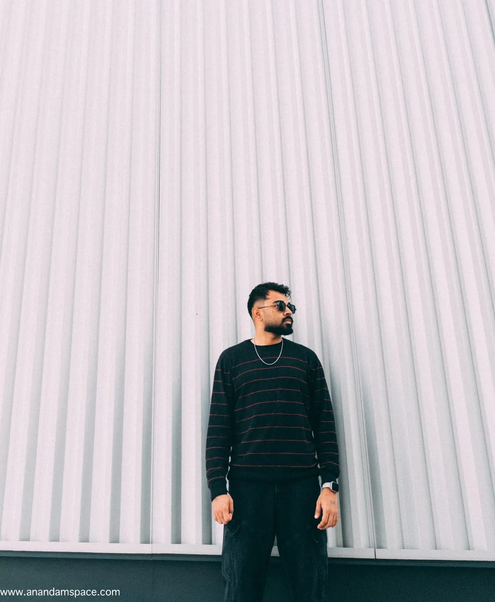
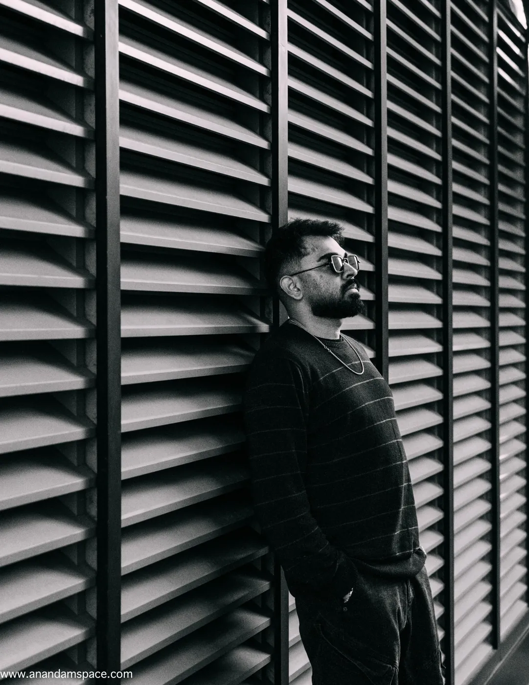

Pow Pow
0:005:22


Shrook is a Dubai-based DJ and music producer with 9 years of DJing and 8 years of production experience. His sound blends psychedelic textures, hypnotic rhythms, rolling basslines and driving percussion, drawing from psytrance, underground techno and hard groove. Moving fluidly between genres, he creates immersive, high-energy journeys rooted in rhythm, atmosphere and experimentation.
Beyond the signature sound
Production explorations across different subgenres and tempos.
Full performance / YouTube
Watch the complete DJ performance.
Shrook / visual archive
Images from the Shrook project.


Offstage / on the Move
Personal tools and instruments for Ableton Move.
iOS companion / Schwung
An iPhone companion for Ableton Move that brings the Schwung Manager, Mirror and performance controls into one pocket sized workspace.
Explore projectWavetable instrument / Schwung
A custom wavetable synth experiment for Ableton Move, exploring evolving oscillator shapes and hands on sound design.
Explore projectBooking / Dubai & beyond
Hypnotic techno, hard groove and psychedelic textures for club nights, festival slots and guest mixes.
Set length and event setup can be coordinated around your programme. Send the date, location, slot and house setup to start the advance.
For promoters & collaborators
Dubai-based DJ and producer Shrook creates high-energy journeys through hypnotic rhythms, rolling basslines, psychedelic textures and driving percussion, moving between hypnotic techno, hard groove and psytrance.
Shrook is a Dubai-based DJ and music producer with 9 years of DJing and 8 years of production experience. His sound blends psychedelic textures, hypnotic rhythms, rolling basslines and driving percussion, drawing from psytrance, underground techno and hard groove. Moving fluidly between genres, he creates immersive, high-energy journeys rooted in rhythm, atmosphere and experimentation.